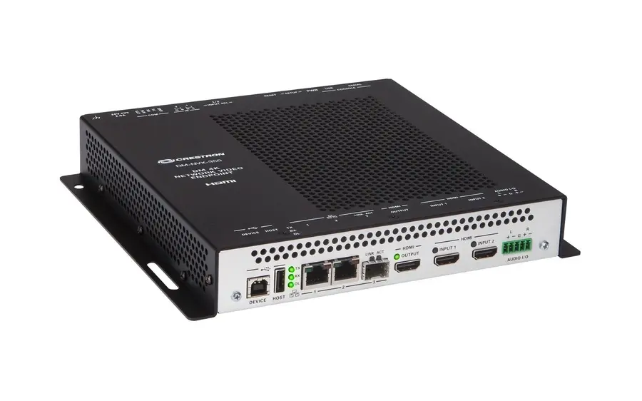

Контроллеры управления
Контроллеры Crestron воплощают в себе исключительно прочную, динамичную и безопасную платформу, которая позволит объединить любую инженерную экосистему современного дома или коммерческого здания в единый централизованный и легкоуправляемый механизм. Помимо Ethernet, контроллеры включают в себя двунаправленные COM-порты и ИК-порты для непосредственного взаимодействия со всеми централизованными аудио-видео источниками, видеодисплеями и другими устройствами. Программируемые релейные порты, позволяющие управлять проекционными экранами, лифтами, контроллерами мощности и другим оборудованием с замыканием контактов.